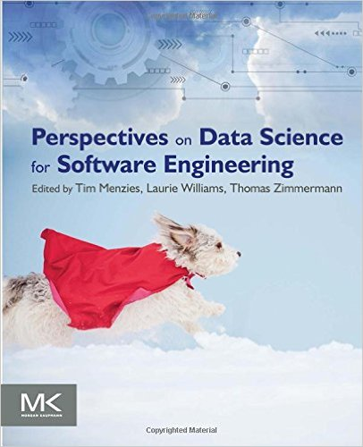

home | bio | papers | lab | helen

Tim Menzies
Prof (full). Ph.D. Computer Science.
SE, AI, data mining, prog. languages.
Thanks to the MSR'17 Award Committee,
(and Many Others as Well!)

Mar 15, 2017
This evening I learned that I was the winner of the inaugural Mining Software Repositories Foundational Contribution Award.
According to the award web site, the award is a recognition of fundamental contributions in the field of mining software repositories, which helped others to advance the state of the art. 
I was nominated for my work on the PROMISE repository http://openscience.us/repo.
I want to thank the committee for the award and I'd like to dedicate the award to the many people whose hard work made the PROMISE repo possible:
- Jelber Sayyad was my original partner in PROMISE. Together, we had the idea in 2004 that SE analytics papers should not only report their results, but also share the data used to achieve those results. Accordingly we started the PROMISE conference series and an associated repo.
- Gary Boetticher worked on the PROMISE conference (and offered advice on the repo) till 2009. He was very influential in those early days and PROMISE (repo or conference) would not have lasted past its infancy without his diligent efforts.
- Tom Ostrand and Elaine Weyuker were very important to the development of the PROMISE conference. The 2005 PROMISE conference meeting was somewhat low energy and Gary and I were considering cancelling the whole thing. But in 2006, Tom and Elaine joined our community, injecting much needed energy and credibility to our meetings. Tom also performed some magic with the ACM Digital Library and, hey presto, suddenly all the PROMISE conference papers become ACM publications.
- Numerous other researchers were kind enough to lend their talents to the organization of the conferences. That list of people is very long and including Ayse Bener, Guenther Ruhe, Stefan Wagner, Ye Yang (and many others, besides).
- Finally, over the years, a small army of students worked on the repo:
- These students regularly scoured the table of contents of SE recent conference proceedings to find new data for PROMISE.
- Many of those former students how have Ph.D.s: Greg Gay, Ekrem Kocaguneli, Joe Krall, Fayola Peters, and Burak Turhan. I hope the connections they made while working on PROMISE will help them in their future careers.
- As to more recent students, special thanks are due to Rahul Krishna for curating the current version of PROMISE; Mitch Rees-Jones for the large scale redesign of the repo web-site in 2014; and David Pryor for many things including all the work with ZENODO (see below).
Why PROMISE?
In this era of Github, GHtorrent, et al. it is hard to recall that only a decade ago, it was difficult to access project data. Nevertheless, that was the case.
Back in 2005 many people in the MSR field were analyzing large amount of (public) open source data but kept the tools and processed datasets to themselves as it was often considered a competitive advantage. In fact, within the MSR community, it was not until 2013 that they started their Data Showcase track to encourage sharing of data.
Meanwhile, back in 2005, I started the PROMISE workshop with Jelber Sayyad that "encouraged" data sharing. I put "encouraged" in quotes, because it actually was a very explicit requirement. Here are part of the 2005 call for papers for PROMISE, which put the following text in all caps:
- "SUBMISSIONS WHICH INCLUDE EMPIRICAL RESULTS BASED ON PUBLICLY ACCESSIBLE DATASETS WILL BE GIVEN THE HIGHEST PRIORITY”
- “A COPY OF THE PUBLIC DATASETS USED IN THE ACCEPTED PAPERS WILL BE POSTED ON THE PROMISE SOFTWARE ENGINEERING REPOSITORY. THEREFORE, IF APPLICABLE, THE AUTHORS SHOULD OBTAIN THE NECESSARY PERMISSION TO DONATE THE DATA BEFORE SUBMITTING THEIR PAPER."
This emphasis in shared and repeatable results was unthinkable at that time and many people predicted that PROMISE would not last long. Tee hee. We proved them wrong. The PROMISE workshop soon grew into its own stand-alone conference. Due to some cosmic quirk of scheduling, the PROMISE and MSR conferences often meet at the same time, in the same corridor, sometimes even in the next room. But both events had full schedules so we rarely made it to each other sessions. Hence, the conferences evolved differently. The following is Prem Devanbu's attempt to capture the differences (and to misquote George Box, he hopes his model is more useful than it is wrong):
- For the most part, the MSR community was mostly concerned with the initial collection of data sets from software projects.
- Meanwhile, the PROMISE community emphasized the analysis of the data after it was collected.
Now it is true that most MSR people analyzed their data with statistics and ML, and many PROMISE people did spend time in data collection. But where the PROMISE conferences was different and unique was its analysis of the analysis of data. According to Robles et al. at MSR'10 paper, most MSR papers were not concerned with a repeated analysis of data explored by a prior paper. On the other hand, the PROMISE people routinely posted all their data on a public repository and their new papers would re-analyze old data, in an attempt to improve that analysis.
Since 2011, PROMISE stopped scheduling itself at the same time as MSR. This has lead to richer interactions between MSR and PROMISE people. Hence, as time passes, the directions of these two conferences grow less distinct. Today, MSR meets at ICSE and PROMISE meets at ESEM and both events draw international leaders in the field of software data science.
So just to be clear, the "PROMISE project" has two parts:
- a repo;
- an annual conference called "PROMISE", that is currently co-located with ESEM.
This award was given to me for my work on the repo. As to the conference, initially, that conference was tightly connected to the repo (to store the data from papers from the conference). Since then, the scope of the repo has extended to include data from many sources.
As to the PROMISE conference, I was its steering committee chair till 2012 when Stefan Wagner was kind enough to take on those duties. These days, the PROMISE conference is guided by its dedicated and talented steering committee Leandro Minku, Andriy Miranskyy, Massimiliano Di Penta, Burak Turhan, and Hongyu Zhang.
Results from PROMISE
Here's a sample of what was achieved with PROMISE (and if anyone wants to add to this list, just email me at tim@menzies.us):
- At the time of this writing, the PROMISE repository includes sharable data on defect prediction, effort estimation, model-based SE, requirements models, performance prediction, over 240,000 real-world spreadsheets (one of the largest collections ever assembled), and many other kinds of data as well.
- The early focus of PROMISE was on effort estimation and defect prediction. One of the landmark results here was documenting the business case for the value of such predictors. For example, Misirli et al. report studies where the guidance offered by defect predictors (a)reduced the effort required for software inspections in some Turkish software companies by 72%; (b)while, at the same time, still being able to find the 25% of the files that contain 88% of the defects.
- The repo not only greatly influenced effort estimation and defect prediction, but also the field of vulnerability prediction. Several recent state of the art papers in that field use methods first widely described in the process of PROMISE data.
- The first examples of successful cross-project learning in defect prediction and effort estimation came from work on PROMISE data. Working with Burak Turhan and Ayse Bener, we used PROMISE data to write a top-ten- most-cited EMSE paper (2009 to 2014) on how to share data between projects (see "On the relative value of cross-company and within-company data for defect prediction", EMSE 2009).
- More recent uses of PROMISE include work in software sharing and privacy. Many researchers have reported that as data is anonymized (for privacy purposes), it becomes harder to make conclusions from that data. Using PROMISE data, my Ph.D. student, Fayola Peters, showed that it is possible to share privatized versions of data that hide details about individual projects, while at the same time allowed researchers to build effect predictors for SE quality attributes (see "Better privacy-preserving data sharing for cross project defect prediction", ICSE’15).
Reviewer Comments
I need to also thank my nominees for their kind words about PROMISE. The following are quotes from those letters.
- "I don't think any other contribution that is even remotely comparable to (PROMISE)."
- "There are many factors that lead to the state-of-the-art in mining software repositories, ... sharing and replicability in the science of software engineering, but in my opinion, none played a greater role than the PROMISE repository, created by Tim Menzies."
- "I can’t think of a stronger contribution right now (to MSR), except maybe the creation of the MSR community by Dr. Hassan."
- "PROMISE makes research results reproducible. For example, according to Robles et al. at MSR 2010, they found that over 95% of 171 papers published at MSR were unreproducible, since their associated data was no longer on­line. However, nearly all of the papers at the PROMISE conference was reproducible since they were based on PROMISE data. I believe this is a really significant contribution. "
- "Prof. Menzies has enabled and inspired a generation of
SE data scientists to use data to make refutable results. In his own
publications, he makes extensive use of PROMISE data with the express
aim of challenging others to share their data and/or repeat/improve/
or refute his own results.
For example,
his 2007 TSE article
"Data Mining Static Code Attributes to Learn Defect
Predictors"
contains
numerous interesting research contributions. But much of
the paper reads like a "how to" guide on software
analytics. All its data was placed on­line at PROMISE.
This paper is widely cited, to say the least: 770
citations since 2007; most cites per year for any
TSE paper since its publication; one the top­100
most cited papers anywhere in the history of SE
(see
http://dl.acm.org/citation.cfm?id=2874005).
That paper ends with following paragraph:
-
Our hope
is that numerous researchers repeat our experiments
and discover learning methods that are superior to the
one proposed here. Paradoxically, this paper will be a
success if it is quickly superseded.
The Future of the PROMISE Repository
Now that PROMISE repository has achieved international recognition, it is strange to report that the repo is being decommissioned.

The ZENODO repo at the CERN Large Hadron Collider offers many services that significantly extend what PROMISE can offer:
- It happily accepts files of up to 50GB.
- It auto-assigns DOIs (digital object identifiers) to all files.
- And if any Github repo is registered at ZENODO, then whenever a new release if tagged in Git, ZENODO automatically grabs a zip copy of the newly released file.
Accordingly, we have nearly finished moving all the PROMISE data over to the ZENODO repo called SEACRAFT (Software Engineering Artifacts Can Really Assist Future Tasks). In future, if anyone wants a long-term storage facility for data, or scripts in Github, please submit to https://zenodo.org/deposit/new?c=seacraft.

Office:3298,eeII,map
Cell: 304-376-2859
Fax: 919-515-7896
Mail: Com.Sci., 890 Oval Dr, Raleigh, NC, USA,
27695-8206.

Mar 19: Just won: the inaugural MSR Foundational Contibution Award More...
Mar 10: FSE accepts our proposal to run SWAN'17 More...
Feb 27: Invited to give keynote, University College, London More...
Feb 22: Workshop accepted to HICSS'18: Frontiers of AI and SE
Feb 19: New: using bad learners to find good configurations More...
Feb 18: New: many models are controlled by a handful of key decisions More...
Jan 13: New gift from Lexis Nexis: $60K extension to SElab
My Books
